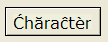

Accented Characters
Alpha Anywhere will store and display accented characters in text and memo fields. However, it does not support accented characters in field labels, scripts, and in utilities that process scripts.
The best way to put accented characters into labels and onto forms is as bitmaps. The following image shows a button on a form.

Enter the accented text into Microsoft Word.
Change the page color in Word to the same color that your form background uses.
Capture the bitmap by clicking SHIFT + PRINT SCREEN.
Crop the image using an image editor and save it as a Windows Bitmap (.BMP).
See Also